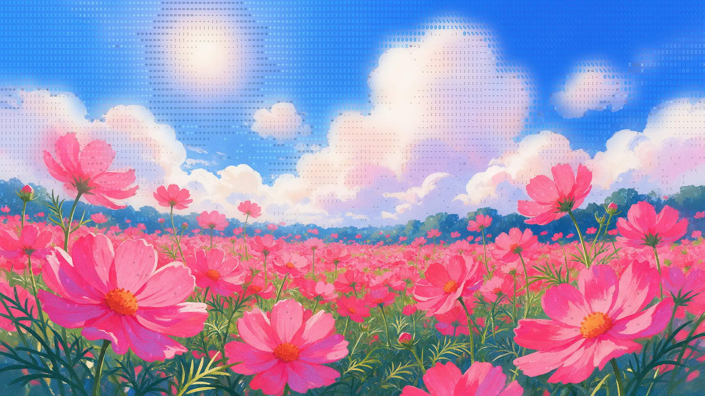
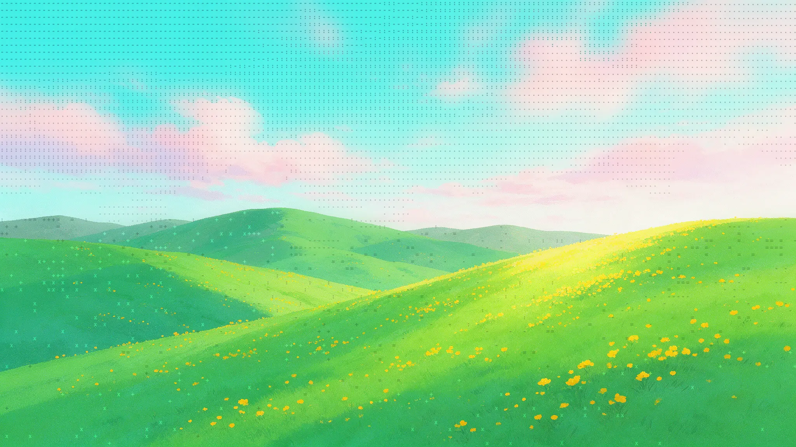
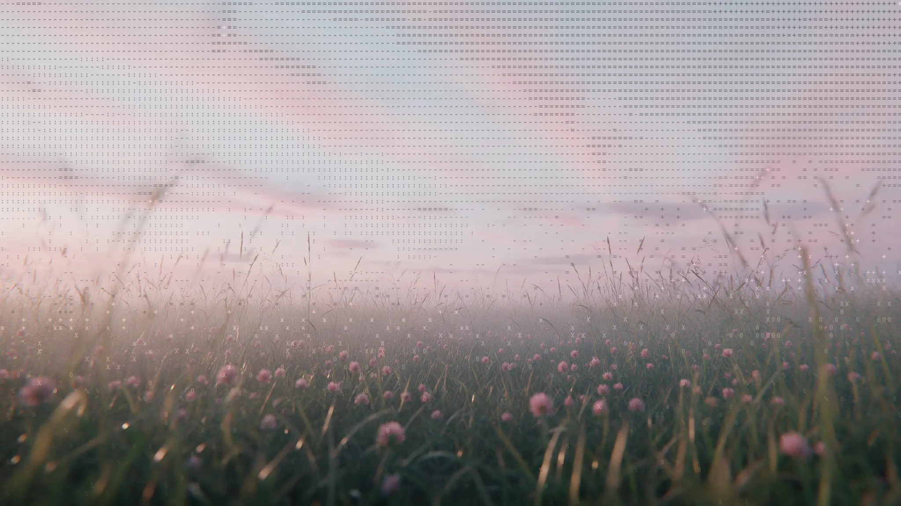
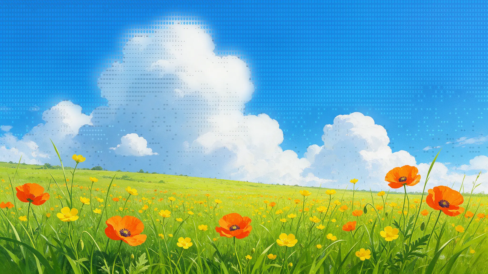
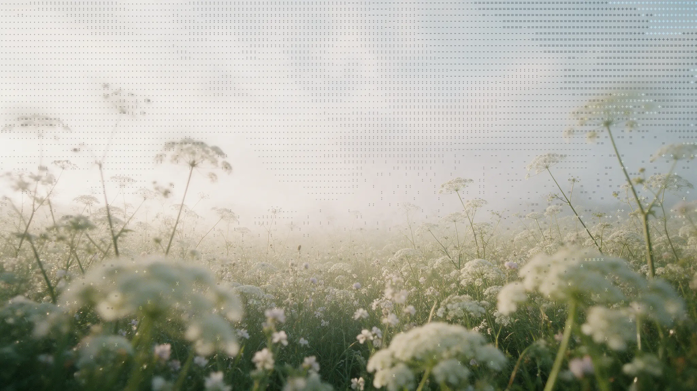
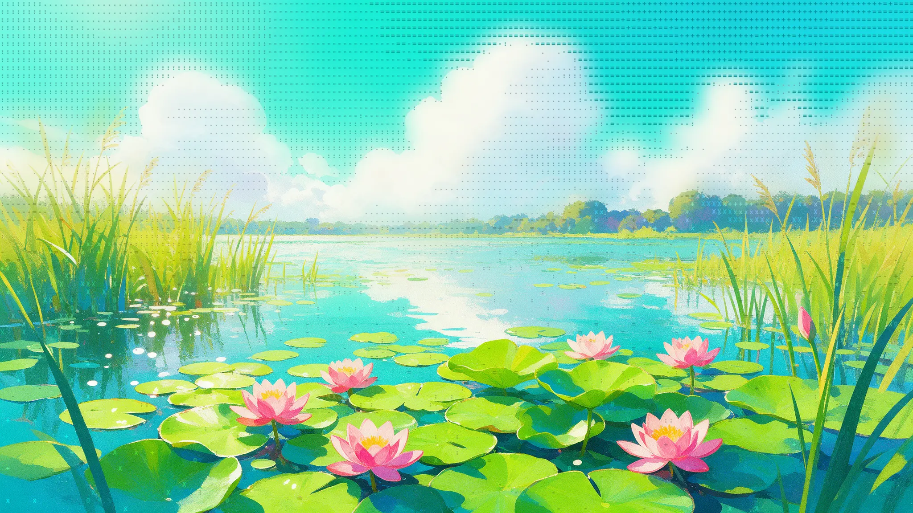

HTHiro Tanaka3h · Kyoto
312Forty cranes, one string.
Paper loaders that fold themselves.
Step 1 of 14 · Start with a square
Drag to set a progress value. The paper folds to that point and holds.
Coral crane #E4685A
The traditional crane, all 14 steps. About 25 seconds a loop.
<origami-loader model="crane" look="paper" style="--ol-front: #E4685A" aria-label="Loading"></origami-loader>
npm i origami-loaders
<script type="module">import 'origami-loaders'</script> <origami-loader></origami-loader>

Page load. The shop’s logo is a fox, so the fox folds while the page loads, and again, tiny, in the tab.

App launch. A heart folds and beats on the splash screen of a health app, then the app opens on today’s numbers.

Waiting for a reply. A tiny pleat breathes where the answer will appear, like a typing indicator.

Pull to refresh. Pull the inbox down and an envelope folds under your finger. Let go and it drops in as new mail.

Deploy. Ship it: each build stage is a span of the fold, and when the boat sails off, the site is live.

Loading more. Reach the end of the feed and a frog hops while the next posts load.
Sending a file. The plane folds with the upload, circles once, and flies off when the file is sent.
Download. A swan folds as a meditation downloads for offline, then glides off when it’s ready.
12 min · with Ana Ruiz
crane, plane, pleat, envelope, boat, frog, swan, heart, whale or fox.ink, blueprint, graphite or paper.light, dark or auto, which follows the system.paper, the default; grain, a smaller built-in grain; or none.--ol-back sets the back.1.5px.Size it with CSS width and height. It stops drawing while it is off screen, and people who prefer reduced motion see the finished model, still.
It is a role="progressbar", so give it an aria-label that says what is loading.
Each model is real paper geometry: folds cut the sheet, the engine tracks every layer, and the paper grain folds with the paper. About 20 kB gzipped with all ten models, and the texture loads on its own.
The source is on GitHub. The paper texture comes from Paper Shaders.